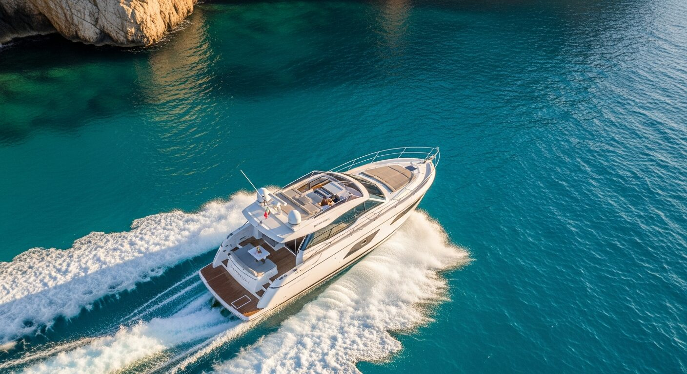
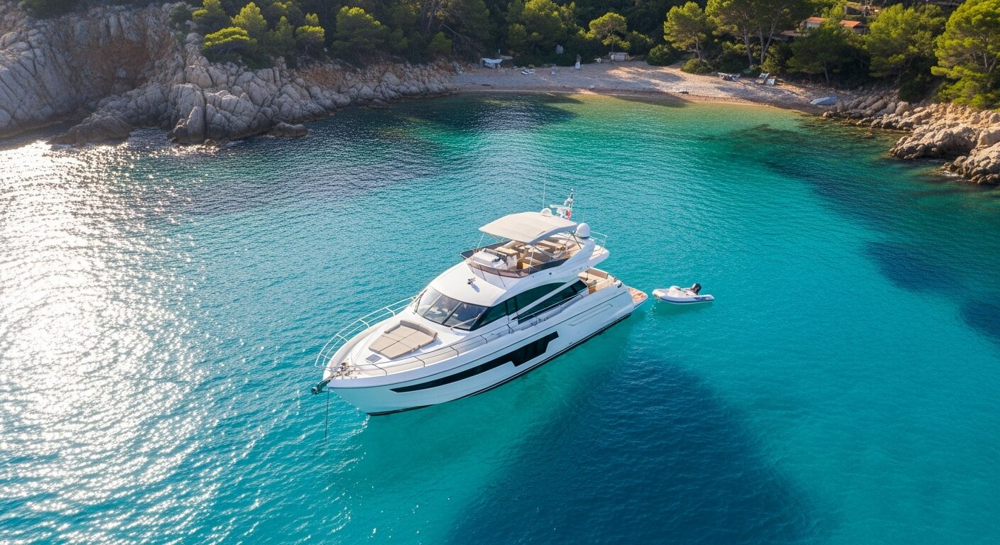

Notre Histoire
Trois générations, une même mer
De Concarneau à Saint-Jean-Cap-Ferrat, la mer coule dans nos veines
Il y a des familles où la mer n'est pas un choix. C'est un héritage. Une évidence transmise de père en fils, forgée par les tempêtes de l'Atlantique, polie par le sel et les années. L'histoire de Prestige Charter ne commence pas dans un bureau. Elle commence sur le pont d'un senneur thonier, quelque part au large de Concarneau, il y a plus d'un demi-siècle.
Concarneau, Bretagne
Le Grand-Père — Patron de Senneurs
À Concarneau, quand les premiers rayons percent la brume du port, un homme prépare son senneur pour une nouvelle campagne au thon. Patron respecté, il connaît chaque courant, chaque humeur de l'Atlantique. Ses mains tannées par le sel racontent mille marées. L'odeur du gasoil se mêle à celle des embruns.
Sur le quai, les filets attendent d'être réparés. Entre marins, on ne parle pas beaucoup — mais on se comprend. C'est lui qui a mis la mer dans le sang de la lignée. Le respect de l'océan, la discipline du travail, le goût de l'effort. Des valeurs qui ne s'écrivent pas, mais qui se transmettent.
Roscoff → Côte d'Azur
Le Père — Du Hauturier au Yachting
Le fils prend la mer depuis Roscoff. Patron de chalutiers hauturiers, il affronte l'Atlantique Nord et les eaux redoutables à l'ouest du sud de l'Angleterre. Des campagnes de plusieurs jours, la houle qui ne pardonne pas, le poisson qu'on arrache à l'océan. La mer n'est pas un décor. C'est une adversaire. Un miroir.
Mais un jour, le Sud l'appelle. Pendant quatre ans, il découvre un autre visage de la mer : le yachting de luxe sur la Côte d'Azur. Le pont entre deux mondes. La même exigence, la même lecture des éléments — mais en service d'une clientèle qui attend l'excellence.
Saint-Jean-Cap-Ferrat
Le Fondateur — L'Héritage Sublimé
Élevé entre filets et embruns, il n'a jamais connu d'autre horizon que celui de la mer. Très jeune, il embarque avec son père depuis Roscoff. Mêmes eaux atlantiques, mêmes côtes anglaises, même sel sur la peau. La pêche hauturière est son école. Rigueur, instinct, respect — des mots gravés par l'Atlantique.
Puis vient le yachting — un an à naviguer sur les plus beaux yachts de la Méditerranée. La synthèse se fait naturellement. Il fonde Prestige Charter à Saint-Jean-Cap-Ferrat : l'authenticité du marin breton au service de l'élégance méditerranéenne. Trois générations condensées en une même vision.

« La mer ne s'apprend pas dans les livres. Elle se transmet. »
— Trois générations de marins
Ce que la mer nous a appris
Authenticité
Trois générations de marins, pas de marketing. Notre savoir-faire se transmet sur le pont, pas sur les réseaux.
Excellence
L'exigence du hauturier appliquée au service premium. Chaque détail compte, chaque passager est unique.
Transmission
Ce que le grand-père a bâti, le père a enrichi, le fondateur a sublimé. La mer est notre héritage commun.
Vivez notre histoire en mer
Embarquez à bord de l'Artemis et laissez trois générations de passion vous guider.